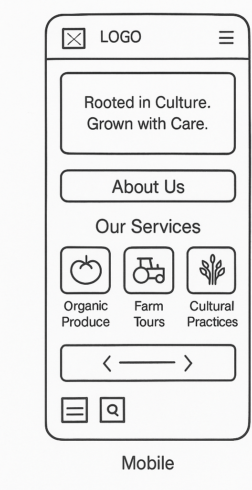
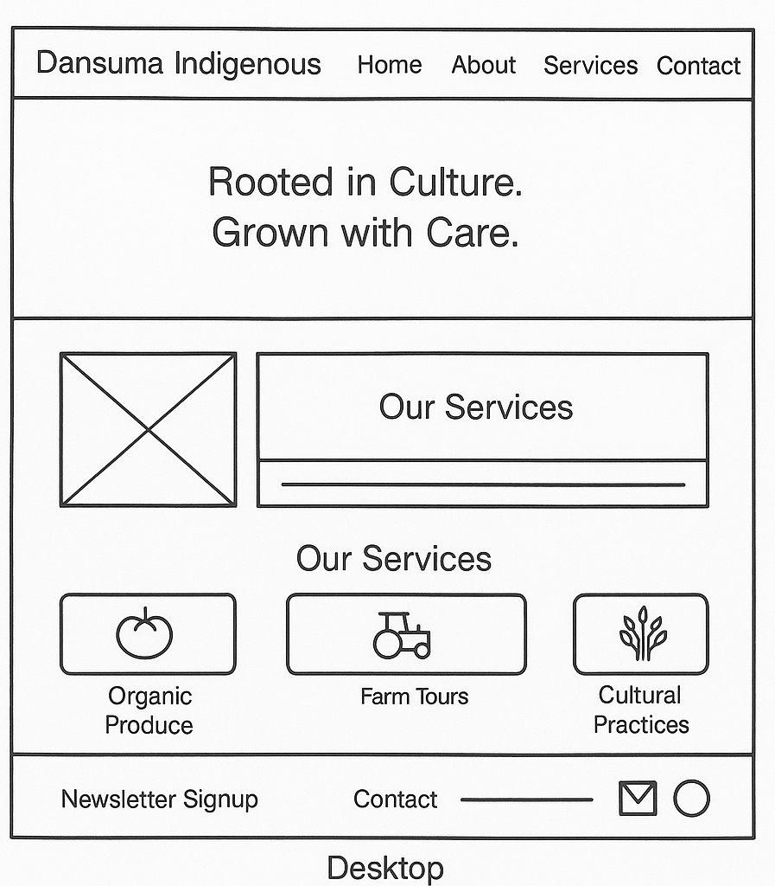

Dansuma Indigenous Farm Production - Site Plan
Site Name
Dansuma Indigenous Farm Production was chosen to reflect the local and cultural roots of the farm. The name emphasizes the commitment to traditional, sustainable farming methods handed down through generations. It blends heritage with purpose, signaling a strong identity in agricultural excellence.
Site Purpose
This website is a digital hub for promoting and educating people about indigenous farming practices. It offers detailed information about Dansuma Farm’s products (organic crops and livestock), farming techniques, and the cultural values behind its operation. Visitors can also explore a gallery, book tours, and engage with community projects led by the farm.
Scenarios
- How can I purchase farm produce or request a delivery?
- What traditional farming methods are practiced at Dansuma Farm?
Color Schema
- #2c5f2d (Forest Green): Used for headings and accents — reflects the freshness of nature and growth.
- #734f29 (Earthy Brown): Used for navigation, background elements, and footers — evokes soil, tradition, and stability.
Typography
- Merriweather: Used for all major headings. Serif font that conveys tradition and heritage.
- Open Sans: Used for body text. Clean, modern, and readable on all devices.
Wireframe
Below is a description of the planned layout for the homepage:
Mobile View (320px)

- Top: Logo and hamburger menu
- Main: Image banner with welcome text
- Below: Sections for "About", "Products", "Farming Practices", and "Contact"
- Footer: Social links + Attributions
Desktop View (960px+)

- Top: Logo and horizontal navigation bar
- Main: Hero banner, followed by a 3-column feature layout
- Sections include: Products grid, Video about Indigenous Farming, Tour Booking Form
- Footer with contact details, social media links, and attribution page link
Note: Wireframe sketches will be added separately (hand-drawn or digital).